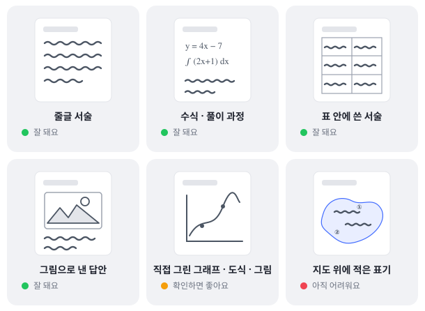

이런 답안까지 채점돼요
잘 되는 것, 한 번 확인하면 좋은 것, 아직 어려운 것을 답안 형태별로 정리했어요.
형태별로 보면 이래요
실제 채점 검수에서 확인한 결과예요. 과목보다 답안의 형태가 결과를 가르거든요.

잘 돼요
준비 없이 그대로 채점해도 선생님 점수와 잘 맞았어요.
- 줄글 서술 (또박또박 쓴 손글씨 포함)
- 바로 세워 스캔한 원고지
- 수식과 풀이 과정 (고등 확률·통계, 미적분까지)
- 표 안에 쓴 서술
- 여러 개를 고르는 문항에서 고른 개수 세기
- 영어·중국어·일본어 등 외국어 답안 읽기
- 정답 요소·키워드가 있는지 판정, "몇 개 제시했는가" 세기
- 답을 쓰지 않은 백지·빈칸 (빈칸은 빈칸 그대로 처리돼요)
확인하면 좋아요
아래도 모두 채점돼요. 다만 이런 것을 점수에 직접 넣었다면 결과를 한 번 보시면 더 정확해요.
- 직접 그린 그래프·도식·그림 (회로도·세포 등) — 그림에 몇 개를 표시했는지로 점수를 매긴다면, 인식 결과에서 그 개수만 한 번 확인해 주세요.
- 단어 수·문장 수 세기 — 띄어쓰기가 분명하면 정확하게 세요. 확실히 하려면 학생이 답 끝에 개수를 직접 적게 해 주세요.
- 화학식·반응식 — 잘 읽어요. 빈칸을 채워 완성하는 문항이면 인식 결과를 한 번 보시면 좋아요.
- 외국어 철자 오류 판정 — 글자에 붙는 작은 부호는 놓칠 수 있어요. 일본어 が의 두 점이나 성조 표시처럼요. 철자 정확성에 배점이 크게 걸려 있으면 확인해 주세요.
아직 어려워요
답안 글만으로는 판단할 수 없는 것들이에요.
- 지도 위에 적은 국가명·기호·순위
- 수업 태도·참여도
- 학생이 스스로 썼는지 여부
🗺️
이 세 가지는 채점 요소에서 빼 주세요. 그 요소만 선생님이 직접 점수를 입력하면 나머지는 그대로 AI 채점을 쓸 수 있어요.